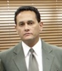
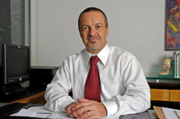
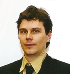

Workshop de Forense Computacional - WFC
| 22/11/2012 (Quinta-feira) | |
|---|---|
| Horário | Programação |
| 08:30 – 09:00 | Dr. Paulo Batimarchi - IFIP – International Federation on Intellectual Property (Latin America) – São Paulo – SP |
| 09:00 – 09:30 | Artigo #1 – Metodologia para Análise Forense de Imagens Digitais utilizando Sensor Pattern Noise: Alisson S. Nascimento, Leonardo Torres, Valter Ramos, José Alencar Neto |
| 09:30 – 10:00 | Artigo #2 – Além do óbvio: a análise forense de imagens e a investigação do conteúdo implícito e explícito de fotografias digitais: Tiago Carvalho, Ewerton Silva, Filipe Oliveira Costa, Anselmo Ferreira, Anderson Rocha |
| 10:00 – 10:30 | Coffee Break |
| 10:30 – 11:00 | Dr. Demétrius Gonzaga - Delegado de crimes virtuais de Curitiba (NUCIBER) – PR |
| 11:00 – 11:30 | Artigo #3 – Identificação da Origem de Imagens com Zoom utilizando Sensor Pattern Noise: Leonardo Torres, Alisson S. Nascimento, Valter Ramos, José Alencar Neto, Alejandro C. Frery |
| 11:30 – 12:00 | Artigo #4 – Content-Based Filtering for Video Sharing Social Networks: Eduardo Valle, Sandra Avila, Fillipe de Souza, Marcelo Coelho, Arnaldo de A. Araújo |
| 12:00 – 12:30 | Dr. Angelo Volpi – Tabelião do 7º. Tabelionato Volpi em Curitiba – PR |
| 12:30 – 14:30 | Almoço |
| 14:30 – 15:00 | Dr. Leandro Bissoli – Escritório Patrícia Peck Pinheiro – Advogados Especialistas em Direito Digital – São Paulo – SP |
| 15:00 – 16:00 | Apresentações técnicas – Instituto Nacional de Criminalística – Departamento de Policia Federal – Brasília – DF |
| 16:00 – 16:30 | Coffee Break |
| 16:30 – 17:00 | Artigo #5 – Identificação de Autoria Offline em Documentos Manuscritos: Aline Maria Malachini Miotto Amaral, Cinthia O. A. Freitas, Flavio Bortolozzi |
| 17:00 – 17:30 | MSc. Luiz Rodrigo Grochocki - Perito Oficial Criminal da Polícia Científica do Estado do Paraná – Setor de Computação Forense |
| 17:30 – 18:00 | Artigo #6 – Aplicação de Observação de Pessoas em Computação Forense: William Robson Schwartz |
| 18:00 – 18:30 | Mesa Redonda |
Palestrantes Convidados (Versão Preliminar)
| Estratégias de investigação e coleta de Evidências: desafios, oportunidades e tendências |
|---|
|
Muitos casos, criminais e cíveis, ficam enfraquecidos e prejudicados por um conjunto probatório deficiente, como resultado de falta de coordenação, estratégia e ferramental adequado no momento em que os profissionais envolvidos num projeto necessitam de uma gestão multidisciplinar dinâmica para atingir resultados positivos. Identificar, quantificar e coletar determinadas informações na internet prova-se tarefa complexa em muitos casos. Num primeiro momento pode-se operar num ambiente onde o expertise da corte em tais casos é reduzido, em outros, pelo contrario, o ambiente é altamente técnico e com procedimentos complexos a serem cumpridos. Ambos os casos representam desafios para qualquer profissional envolvido em litígios nessa esfera, ainda mais quando as evidencias proveem de diferentes jurisdições, com diferentes cadeias de custódia. Essa apresentação tem por objetivo trazer para debate algumas técnicas, tecnologias e experiências de casos concretos de sucesso no cenário internacional. Paulo Henrique Batimarchi Profissional formado em Direito pela Universidade Mackenzie, SP, com especialização em Direito Autoral e Direito Eletrônico, além de Web Marketing e Gestão Estratégica. Atua na área de combate a delitos cyberneticos desde 1999 em investigações de casos internacionais e nacionais, treinamento para agentes de Law Enforcement em toda America Latina e proteção de conteúdo online. |
| Cibercrimes e a Realidade Brasileira |
|
 Há muito tempo nosso planeta vem sendo afetado pelos reflexos dos crimes praticados mediante uso de recursos tecnológicos. Atos de espionagem em busca de informações nos campos militar, comercial e industrial foram responsáveis por ascensões e quedas de governos e impérios ao longo das últimas décadas. Inegável que estratégias assemelhadas foram utilizadas para coibir tais delitos. Com a popularização das diversas formas de tecnologia, o mapa da criminalidade passou a incorporar novas características. Nessa linha de análise, destaco que algumas dessas técnicas, conceitos e principalmente ferramentas tecnológicas devem passar a integrar o campo de visão dos responsáveis pela manutenção da Ordem Pública e da Segurança Nacional. Vale ressaltar que pesquisas recentes revelaram um expressivo aumento de registros de ocorrências pertinentes às diversas modalidades de delitos praticados através do emprego de recursos tecnológicos no Brasil e no exterior. Esse dado não reflete necessariamente aumento da incidência de crimes dessa natureza, mas certamente indica que a mesma sociedade que até então não acreditava na possibilidade de uma resposta efetiva por parte do Estado agora, diante das notícias da criação de unidades especializadas, manifesta-se pleiteando providências e resultados. Neste diapasão, a idéia central dessa análise é estimular a reflexão sobre as diversificadas condutas delituosas a que toda sociedade está sujeita, analisar a estrutura estatal e legal destinada a atender a demanda decorrente desses crimes e, ao mesmo tempo, apresentar sugestões concretas para que o Estado, através de seus representantes, nas três esferas de poderes, esteja preparado a identificá-las enfrentá-las.Demétrius Gonzaga Graduação em Direito pela Faculdade de Direito de Curitiba, Delegado-Chefe do Núcleo de Combate aos Cibercrimes – NUCIBER – Curitiba-PR, Coordenador Estadual do INSTITUTO BRASILEIRO DE INTELIGÊNCIA CRIMINAL – INTECRIM, Professor Titular da disciplina Investigação de Crimes Cibernéticos da Escola Superior de Polícia Civil do Paraná e Coordenador de Defesa Cibernética para a Copa de 2014, no Estado do Paraná. |
| Os Documentos e Assinaturas Eletrônicas e Seus Aspectos Legais |
|
 Definições jurídicas referente a documento, sua definição, características e valor probatório.Comparação do documento em papel ao digital. Assinaturas definição jurídica, assinatura eletrônica e digital, definição, características, legislação. Aplicações práticas para validação, autenticação e reconhecimento de assinaturas. Atas notariais, definição, aplicação, exemplos.Angelo Volpi Neto é Tabelião, escritor, consultor, formado em Direito pela PUC-Pr., professor convidado de pós graduação na PUC-Pr., UNISINOS-RS, UNIRON-RO, entre outras. É Professor de direito eletrônico e Coordenador de Pós Graduação em Direito Imobiliário da Universidade POSITIVO. Autor dos livros: Comércio Eletrônico Direito e Segurança, Ed. Juruá e A VIDA EM BITS, Ed. Aduaneiras. Colunista e membro do Conselho Editorial da revista INFORMATION MANAGEMENT. Articulista, autor de centenas de ensaios, artigos e crônicas. |
| Aspectos Jurídicos da Forense Computacional - levantamento e coleta de provas |
| Leandro Bissoli - Advogado especialista em Direito Digital, sócio do escritório Patricia Peck Pinheiro Advogados, formado pela Faculdade de Direito de São Bernardo do Campo, pós graduando em Negociações Econômicas Internacionais pelo Programa San Tiago Dantas, especialização em Política Comercial Internacional pela Fundação Getúlio Vargas e Cooperação Internacional ao Desenvolvimento pela Universidade de São Paulo. Membro do Instituto Brasileiro de Estudos da Concorrência, Consumo e Comércio Internacional e da Comissão de Comércio Exterior e Relações Internacionais da OAB-SP. Em tecnologia, possui experiência em análise e desenvolvimento de aplicação web e mobile, tendo atuado como Gerente de Tecnologia em diversas empresas do setor. Certificado pela Sun Microsystems nos cursos SL-110, SL-275, OO-226, SL-285 e SL-314. Experiência em arquitetura e gerenciamento de bases de dados como MSSQL, MYSQL e ORACLE. Certificado ICS Professional através da Impacta Certified Specialist. Cutting Edge Hacking Techniques (GHTQ) certificado pelo Global Information Assurance Certification (GIAC). |
| Polícia Científica do Paraná: a atuação do Perito Criminal especialista em Informática Forense |
|
 Nesta palestra o participante terá oportunidade de conhecer a estrutura da Seção de Informática Forense da Polícia Científica do Paraná, os aspectos legais, tecnológicos e procedimentais das perícias em Informática Forense. Bem como, receberá dicas de como agir em incidentes em ambientes computacionais, como preservar uma evidencia digital, e quem procurar quando vítima de incidentes computacionais. Serão ainda apresentados exemplos de exames realizados pela Polícia Científica em dispositivos computacionais.Luiz Rodrigo Grochocki é Perito Criminal da Polícia Científica do Paraná, bacharel em direito e engenharia, especialista em Estado Democrático de Direito pela Escola do Ministério Público do Paraná, especialista em Direito Aplicado pela Escola da Magistratura do Paraná, Mestre em Tecnologia pela PUC-PR. |
Apresentações técnicas – Instituto Nacional de Criminalística – Departamento de Policia Federal – Brasília – DF
| Apresentação #1: Reconhecimento automático de plantações de Cannabis sativa a partir de imagens de sensores remotos |
|---|
| A apresentação se baseia na tese de Doutorado da autora sobre a detecção de plantios de Cannabis sativa com emprego de classificação de imagens baseada em objetos, seus principais resultados e idéias de trabalhos futuros. Desafios: Aplicação de técnicas de mineração de dados para aprimoramento das regras e redução de ruídos da classificação; desenvolvimento de algoritmos de reconhecimento de feições de Cannabis sativa e outras lavouras ilícitas a partir de dados de sensores remotos. Alessandra Lisita DC Alessandra Lisita é Perita Criminal Federal lotada na Área de Perícias de Meio Ambiente do Instituto Nacional de Criminalística da Polícia Federal. É Engenheira Florestal e Mestre em Ciência Florestal pela Universidade Federal de Viçosa e Doutora na área de Processamento de Dados e Análise Ambiental pelo Instituto de Geociências da Universidade de Brasília. |
| Apresentação #2: OCR específico para números de série em cédulas do Real |
|
A apresentação é o resumo da metodologia usada para abordar um caso real em que se pretendia analisar o vínculo entre suspeitos a partir dos números de série de uma grande quantidade de cédulas apreendidas com cada um, que incluiu o desenvolvimento de um OCR específico para tal fim. DESAFIOS: I) Aprimorar o algoritmo de OCR para operar imagens de cédulas em diferentes condições de resolução, posição, iluminação e distorção e II) Desenvolver uma ferramenta simples e amigável capaz de realizar a OCR de cédulas e analisar as possíveis consequências de construir um banco de dados com os números de série das cédulas associados aos locais e época onde foram identificadas. Jorge de A. Lambert - MC Jorge Lambert é Mestre em Sistemas e Computação pelo Instituto Militar de Engenharia, onde foi professor no Departamento de Engenharia Elétrica em 2004, 2005 e 2006. Concluiu o curso de formação de Oficiais de Comunicações da Academia Militar das Agulhas Negras em 1992, a graduação em Engenharia Elétrica no IME em 1998, trabalhou na Indústria de Material Bélico do Brasil, na Fábrica de armas de Itajubá e na Fábrica de Material de Comunicações do Rio de Janeiro, nas atividades de manutenção elétrica, controle de qualidade e P&D em ambas as fábricas. Tem especialização em Segurança do Trabalho pela UFRJ, concluída em 2005. Em 2007, após o exame de qualificação, interrompeu o curso de Doutorado em Engenharia Elétrica no CETUC/PUC-RJ para tomar posse no cargo Perito Criminal Federal. Trabalha atualmente no Serviço de Perícias em Audiovisual e Eletrônicos do Instituto Nacional de Criminalística em Brasília. |
| Apresentação #3: Compressão de imagens baseada em conteúdo de interesse forense |
|
A apresentação aborda a relação de compromisso entre qualidade de imagens e necessidade de memória para armazenamento, o que contribui para a baixa qualidade das imagens armazenadas pelos sistemas de CFTV e resulta em baixo aproveitamento das imagens de CFTV no âmbito forense. DESAFIO: Desenvolver algoritmos e ferramentas, possivelmente integrados em hardware, capazes de reconhecer o conteúdo de potencial interesse forense, especialmente para identificação, e realizar operações de compressão que preservem as principais características das regiões de interesse em detrimento do restante da cena. Jorge de A. Lambert - MC Jorge Lambert é Mestre em Sistemas e Computação pelo Instituto Militar de Engenharia, onde foi professor no Departamento de Engenharia Elétrica em 2004, 2005 e 2006. Concluiu o curso de formação de Oficiais de Comunicações da Academia Militar das Agulhas Negras em 1992, a graduação em Engenharia Elétrica no IME em 1998, trabalhou na Indústria de Material Bélico do Brasil, na Fábrica de armas de Itajubá e na Fábrica de Material de Comunicações do Rio de Janeiro, nas atividades de manutenção elétrica, controle de qualidade e P&D em ambas as fábricas. Tem especialização em Segurança do Trabalho pela UFRJ, concluída em 2005. Em 2007, após o exame de qualificação, interrompeu o curso de Doutorado em Engenharia Elétrica no CETUC/PUC-RJ para tomar posse no cargo Perito Criminal Federal. Trabalha atualmente no Serviço de Perícias em Audiovisual e Eletrônicos do Instituto Nacional de Criminalística em Brasília. |
| Apresentação #4: Aumento da precisão no cálculo de velocidades a partir de registros de imagens com baixa resolução espacial e temporal |
|
A apresentação é um resumo da metodologia utilizada para o cálculo da velocidade do avião no acidente da TAM em congonhas em 2007 a partir das imagens das câmeras do CFTV longo da pista de pouso. DESAFIOS: I) Desenvolver algoritmos capazes de aprimorar a precisão das velocidades calculadas a partir sequências de imagens de baixa resolução típicas de um CFTV. II) Definir um conjunto de requisitos a serem atendidos por um banco de imagens de testes a ser utilizado para o aprimoramento e validação das metodologias de cálculo de velocidade a partir de imagens típicas de CFTV considerando limites pre-estabelecidos de precisão e confiabilidade. Jorge de A. Lambert - MC Jorge Lambert é Mestre em Sistemas e Computação pelo Instituto Militar de Engenharia, onde foi professor no Departamento de Engenharia Elétrica em 2004, 2005 e 2006. Concluiu o curso de formação de Oficiais de Comunicações da Academia Militar das Agulhas Negras em 1992, a graduação em Engenharia Elétrica no IME em 1998, trabalhou na Indústria de Material Bélico do Brasil, na Fábrica de armas de Itajubá e na Fábrica de Material de Comunicações do Rio de Janeiro, nas atividades de manutenção elétrica, controle de qualidade e P&D em ambas as fábricas. Tem especialização em Segurança do Trabalho pela UFRJ, concluída em 2005. Em 2007, após o exame de qualificação, interrompeu o curso de Doutorado em Engenharia Elétrica no CETUC/PUC-RJ para tomar posse no cargo Perito Criminal Federal. Trabalha atualmente no Serviço de Perícias em Audiovisual e Eletrônicos do Instituto Nacional de Criminalística em Brasília. |
| Apresentação #5: Classificação de Imagens de Pornografia e Pornografia Infantil Utilizando Recuperação de Imagens Baseada em Conteúdo |
|
A apresentação se baseia na dissertação de Mestrado do autor sobre este tema, apresentando seus principais resultados e ideias de trabalhos futuros. Itamar de Almeida Carvalho - MC Itamar Carvalho é Perito Criminal Federal da área de Informática, atualmente lotado no Serviço de Perícias em Informática do Instituto Nacional de Criminalística da Polícia Federal. É Bacharel em Ciência da Computação pela Universidade Federal do Ceará e Mestre em Informática Forense e Segurança da Informação pela Universidade de Brasília. |
Promoção

Organização


Apoio